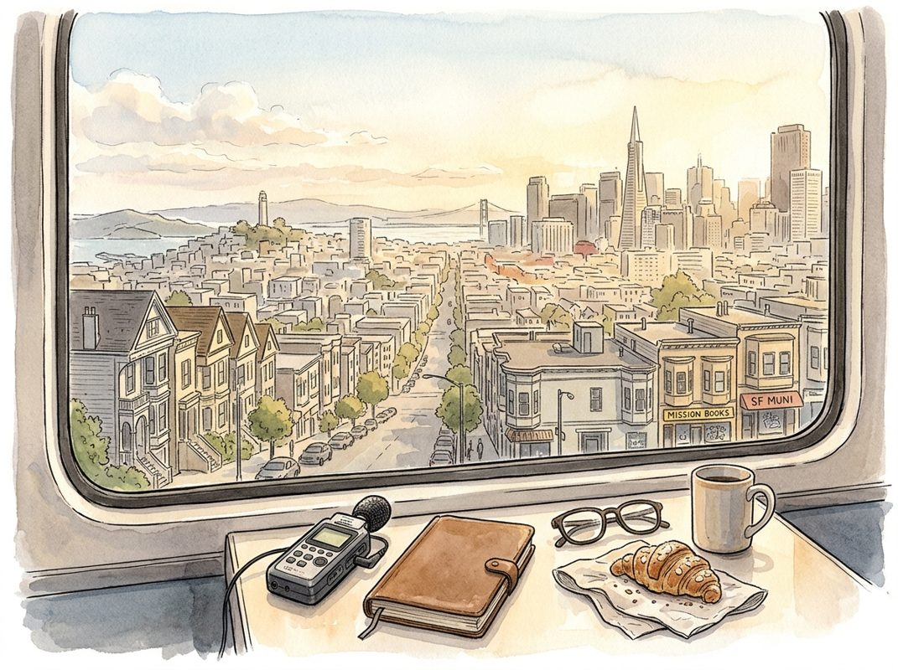

10/26

播客简报 2026-10-26
今日更新
Unlocking Persistent Motivation & Extreme Resilience | Ross Edgley
来源：Huberman Lab
状态：已读网页 transcript
这期播客深入探讨了超耐力运动员Ross Edgley如何通过多元化的动机来源和强大的心理韧性克服极限挑战，并结合神经科学视角，为任何希望提升持久动力和应对逆境能力的人提供了深刻的洞察和可操作的思维框架。
- 挑战极限的内在驱动：从童年到自我实现：Ross Edgley从小就展现出异于常人的内在驱动力，10岁时徒步旅行会在背包里偷偷加石头，只为增加挑战难度，这并非为了炫耀，而是纯粹的自我满足。这种对“不可能”的追求贯穿他的职业生涯，如果一个挑战听起来“荒谬”，那正是他想要的。Huberman指出，这种高能量背景下的能量管理至关重要。Ross早期的挑战，如环游大不列颠游泳，更多是出于自我成就和声望的“小我”驱动，追求打破纪录。然而，随着年龄增长和人生阅历的丰富，他的动机开始向更高层次演变。
- 动机的演变：从自我到超越与责任：Ross的动机并非一成不变，而是动态演进的。在完成环游大不列颠的壮举后，他感到纯粹的纪录追求有些“肤浅”。随后环游冰岛的挑战，他与冰岛大学合作，旨在提高海洋保护意识并收集环境DNA样本，这赋予了挑战更深层的意义。更重要的是，在冰岛游泳后期，面对飓风和火山爆发的威胁，以及即将临盆的妻子，他被“不想让家人失望”和“必须赶回家迎接孩子出生”的强烈责任感所驱动，这种对家庭的爱和承诺超越了所有其他动机，成为他冲刺最后100英里的强大燃料。这体现了动机从个人成就向集体利益和家庭责任的升华。
- 韧性与意志力的神经科学解读：Andrew Huberman引入了“前扣带回中区”（anterior mid-cingulate cortex, AMCC）这一脑区，它与毅力、意志力以及应对挑战的能力密切相关。刺激该区域会让人产生“即将面对巨大挑战但会迎难而上”的感觉。AMCC的活跃度和大小与完成艰难任务的能力呈正相关，且可以通过刻意挑战来增强。Huberman提出一个“车轮辐条”式的动机模型：毅力并非单一的“坚持或放弃”的跷跷板，而是由多个动态平衡的动机来源（如承诺、恐惧、爱、愤怒、目的等）共同支撑。只要任何一个“辐条”不长期触地，个体就能持续前进。Ross的经历完美印证了这一点，他会根据情境调用不同的“燃料”。
- 恐惧与承诺：黑暗能量的驱动力：播客探讨了“黑暗能量”作为动机的强大作用，例如“因为你说了你会做”的承诺，以及“害怕让人失望”的羞耻感。Ross坦言，在冰岛游泳后期，面对媒体和部分人的质疑，他内心那个10岁时好胜心极强的“影子自我”被唤醒，他决定完成挑战，仅仅是为了证明那些不相信他的人是错的。这种“不愿被看扁”的恐惧和好胜心，虽然不常被公开谈论，却是许多人在极限情境下坚持下去的强大动力。Huberman强调，这些看似负面的情绪，如果能被有效管理和利用，也能成为实现目标的有效燃料。
- 团队协作与“外包常识”的重要性：Ross反复强调他的成就并非“我”而是“我们”的胜利，尤其在海上游泳这种极端环境中，团队的作用至关重要。无论是解读潮汐、天气，还是应对水下危险（如育空河的漩涡和浮木），支持团队的专业判断是确保他安全前进的关键。Ross甚至提到他会“外包常识”，因为他知道自己有“游到进医院”的倾向，尤其在成为父亲后，他更需要团队在他达到生理极限前及时制止他。这种对自身局限的清醒认知，并信任团队的专业判断，是他在极限挑战中保持可持续性的重要策略。
Mark Cuban: The Next Market Crash Is Where The Real Money Is Made!
来源：Diary of a CEO
原链接：
状态：已读完整音频 transcript
这期播客是Mark Cuban对其创业历程、商业哲学和未来市场洞察的深度分享。它不仅揭示了这位亿万富翁从零到一的成长轨迹，更提供了关于销售、专注、持续学习和如何应对市场波动的实用智慧。适合所有对创业、投资、个人成长以及科技趋势感兴趣的中文读者。
- 市场洞察与AI泡沫警示：Mark Cuban开篇便对当前市场，特别是AI领域，提出了尖锐的警告。他指出，许多AI公司为了驱动技术发展，正过度借贷和支出，其借款额已远超盈利能力。他明确表示，我们可能正处于一个“债务泡沫”之中。Cuban认为，AI本身并不具备智能、伦理或行动后果的认知，它只是一个工具。这种过度投资和非理性繁荣，让他预见未来市场可能面临一次“真正的金钱制造机会”，暗示着市场崩溃后将是价值投资的良机。他强调，真正的财富往往在市场低谷时积累。
- 创业基因的萌芽：从垃圾袋到棒球卡：Cuban的创业精神并非一蹴而就，而是从小培养。他回忆道，童年时父亲一句“等你有了工作，想买什么就买什么”的话，激发了他赚钱的欲望。他从9、10岁开始，用零花钱购买棒球卡，重新包装后以更高价格出售，这是他最早的“生意”。12岁时，他甚至挨家挨户推销垃圾袋，以3美元购入6美元售出。这段经历让他深刻体会到，如果能挨家挨户推销成功，就能做成任何事。这种早期的销售实践，为他日后的商业生涯奠定了坚实的基础，培养了他面对拒绝、快速反应和解决问题的能力。
- 销售：创业成功的核心技能：在Cuban看来，销售是任何企业成功的基石，没有销售，就没有成功的企业。他强调，一个好的销售员必须真正关心客户，了解自己的产品，并真心想帮助他人解决问题，而不是强行推销。他以自己早年挨家挨户推销杂志和窗户的经历为例，说明销售不仅是推销产品，更是理解客户需求并提供解决方案。在《创智赢家》（Shark Tank）节目中，当创业者介绍公司时，他能迅速判断出如何销售或无法销售其产品。他认为，如果你热爱自己的产品或服务，销售就会变得轻而易举，因为你相信它能帮助别人。
- 创业的真谛：专注、盈利与持续学习：Cuban纠正了年轻创业者普遍存在的几个误区：一是认为必须融资才能成功；二是盲目追求高销售额而非盈利。他以自己的第一家公司Micro Solutions为例，强调了八年间每月都保持盈利的重要性。他认为，大多数成功的企业家并非亿万富翁，而是那些赚取数百万到上亿美元的人，这才是“美国梦”的真正体现。他告诫创业者，必须专注于一件事并做到极致，因为当你在一领域出类拔萃时，机会自然会涌现。此外，他强调持续学习和自我教育的重要性，尤其是在科技快速发展的时代，必须保持领先，否则就会被淘汰。
- 达拉斯独行侠：从热爱到商业价值的转变：Cuban收购达拉斯独行侠队（Dallas Mavericks）的初衷并非纯粹的商业考量，而是源于他对篮球的热爱和智力挑战。他以1.85亿美元的价格买下这支曾被评为“过去十年最差职业体育特许经营权”的球队，目标是将其打造成一支冠军队伍。他投入大量精力，运用数据和技术提升球队表现。然而，随着时间的推移，他发现NBA的重心从篮球本身转向了球队估值和房地产等与篮球无关的商业运作，这让他感到压力和乐趣的流失。最终，他以43亿美元的价格出售了球队，这笔交易也反映了他从纯粹热爱到理性商业决策的转变。
AI Agents Are Already Changing the Price of Goods
来源：Odd Lots
原链接：https://omny.fm/shows/odd-lots/ai-agents-are-already-changing-the-price-of-goods
状态：已读完整音频 transcript
{
- "takeaway": "这期播客深入探讨了AI代理和算法定价如何颠覆传统商业模式，从固定价格转向高度个性化和动态的定价策略。它揭示了消费者和企业在AI驱动的“代理战争”中面临的挑战与机遇，以及这对市场公平性、竞争和消费者权益的深远影响。本期节目适合所有关注AI技术对经济、商业伦理和日常生活影响的中文读者。",
- "memo_sections": [
- "title": "AI代理的兴起与定价的“军备竞赛”",
- "body": "播客开篇，主持人Tracy Alloway和Joe Weisenthal讨论了AI代理（如Muse）的潜力。Joe分享了Muse曾帮他省下数千美元的经历，因为它识别出邮件中被忽略的重要细节。然而，他也指出，尽管AI代理能充当“私人购物员”，扫描海量价格寻找最优交易，但目前其购物体验仍显笨拙，例如通过模拟人类操作浏览器进行购买。更重要的是，当买家拥有AI驱动的购物解决方案时，卖家也同样拥有强大的算法定价工具。这导致了一场潜在的“军备竞赛”，双方的AI代理相互博弈。主持人担忧，最终的赢家可能只是那些向双方出售AI技术的公司，而市场定价的未来充满了不确定性。"
- },
历史精选
Special: Invest Like the Best on Acquired
来源：Acquired
状态：已读音频详细听记
这期播客深入探讨了知名投资人兼播客主持人 Patrick O'Shaughnessy 的职业生涯、投资哲学和内容创作理念，揭示了量化投资的演变、资产管理行业的创新以及“公开学习”和“好奇心驱动”在个人和商业成功中的关键作用。适合对量化投资、资产管理行业转型、播客运营以及个人成长与学习方法感兴趣的听众。
- Patrick O'Shaughnessy 的背景与量化投资的起源：Patrick O'Shaughnessy 现任 O'Shaughnessy Asset Management (O-SAM) 的 CEO，公司由他父亲于 1987 年创立，最初专注于量化投资研究。他父亲是数据驱动投资方法的先驱，通过回溯 1920 年代的数据，发现“愚蠢地简单”的策略（如“道琼斯狗”策略）也能跑赢大盘。成功的关键在于严格执行纪律和低价买入。Patrick 指出，量化投资只是工具，其早期工作之所以“惊人地简单”，是因为当时很少有人愿意深入挖掘数据，甚至通过翻阅缩微胶卷获取差异化数据集，体现了“努力挖掘”的重要性。公司名称“Invest Like the Best”也源于他父亲的书，旨在通过模型化成功基金经理的策略，提取可移植的经验教训。
- 金融危机中的成长与 Netfolio 的尝试：在 2008 年金融危机前夕，Patrick 的家族业务经历关键转型。其早期资本管理业务曾被 Bear Stearns 收购，但在 2007 年夏天，团队从 Bear Stearns 分拆出来，成立 O-SAM。Patrick 亲身经历了 2008 年 3 月 Bear Stearns 崩溃的混乱，当时他刚毕业，对金融市场一无所知，却被迫在极度紧张环境下快速学习，面对愤怒客户。他认为这段艰难经历是宝贵的教育。在此之前，90 年代后期他们曾尝试推出 Netfolio，一个被描述为“摩根士丹利投资与 Wealthfront 结合体”的早期机器人投顾平台。Netfolio 旨在提供直接面向消费者的定制化主动投资策略。尽管因时机过早未能完全实现，但它体现了 O-SAM 团队对技术和开放研究的喜爱，也为公司未来的软件平台“Canvas”埋下伏笔。
- 哲学教育与“学习的乐趣”：Patrick 的教育背景独特。他坦言高中时是“极其糟糕的学生”，大学申请也遭遇挫折。然而，在转学后，他决定“逆转”学习轨迹，最终在圣母大学攻读哲学。他发现哲学允许他以独特方式引导学习，鼓励自由阅读和构建论点，让他立刻爱上这门学科。他认为，这种自主学习方式，以及哲学培养的批判性思维和构建论证能力，是他职业生涯中最重要的基础。Patrick 强调，早期教育最宝贵的收获是“享受学习”的感觉，这种好奇心驱动的学习能让人成为“高坡度学习者”，在任何领域都能快速掌握新知识。他将这种“心流”体验视为学习的终极目标，并认为它比掌握 Excel 等具体工具更为重要。这种对学习乐趣的追求，也贯穿了他后来的播客和业务发展。
- 资产管理模式的本质与 Canvas 平台的创新：Patrick 详细阐述了传统资产管理公司的商业模式：接受客户委托管理资产，按管理资产总额收取小比例年费（管理费），类似于 SaaS 的经常性收入模式，简单高效。他指出，传统公开市场资产管理公司多采用管理费模式，而非另类投资常见的“管理费+业绩报酬”模式，主要原因在于公开市场策略的“容量”更大，可轻松管理巨额资金而不显著影响市场价格。O-SAM 近年来向更纯粹的软件业务转型，通过名为“Canvas”的平台交付产品。Canvas 借鉴了 AWS 的理念，将公司内部用于交易执行、工作流和报告的工具商品化，提供给高净值个人及其财务顾问。它允许顾问设计高度定制化的投资策略，而非选择预设选项，从而赋能顾问为客户提供差异化服务，实现“平台赋能”而非直接竞争。
- 播客《Invest Like the Best》的崛起与“侦察”哲学：Patrick 的播客《Invest Like the Best》始于 2016 年秋季，早于播客爆炸式增长时期，他认为这是“幸运的时机”。播客的成功源于其“产品市场契合度”，他发现互联网奖励“分布的边缘”，而他对“深度、古怪的商业和投资讨论”充满热情。播客的增长是“有机”的，他从未进行市场推广，只是通过好奇心驱动，与有趣的人交谈。他将播客比作一种“作弊码”，通过与世界上最好的人对话，在一小时内获取相当于多本书的见解，效率远高于阅读。Patrick 将自己未来的目标定位为“制图师”，绘制商业和投资领域最佳知识的地图，并构建一个开放的知识数据库。他将自己的角色从“原创者”转变为“路由器”，即向最了解领域的人提问，整合他们的答案。他的核心哲学是“侦察”：积极寻找下一个有趣、有用、有潜力的概念、想法、市场、人物或产品，并将其转化为实际价值。
Arthur J. Gallagher: Insurance Broking - [Business Breakdowns, EP.148]
来源：Business Breakdowns
原链接：https://joincolossus.com/episodes/22247084/hayward-gallagher-insurance-broking
状态：已读网页 transcript
这期播客深入剖析了全球领先保险经纪公司Arthur J. Gallagher (AJG)的商业模式、增长策略和独特文化。对于希望了解保险经纪行业本质、资产轻型服务业的护城河、以及如何通过有效收购和强大企业文化实现长期稳定增长的投资者和企业经营者来说，本期节目提供了宝贵的洞察。
- AJG：全球保险经纪巨头：Arthur J. Gallagher (AJG) 创立于1927年，现已成为全球营收超100亿美元的顶级保险经纪公司。其家族传承深厚，现任CEO Patrick Gallagher是创始人孙辈。AJG在保险价值链中连接客户与保险公司，提供风险管理咨询和保险产品匹配服务，而非承担保险风险。它与Marsh & McLennan、Aon等公司并列为行业巨头，专注于为企业和个人提供复杂的风险解决方案。
- 保险经纪的价值链与专业化：保险价值链复杂，经纪人是客户代理，负责评估风险、设计定制方案、谈判条款并在理赔时协助。AJG业务分保险经纪和风险管理两大板块。其核心优势在于“专业化”，专注于特定行业或复杂风险领域（如能源、航空），提供深度专业知识和定制化解决方案，从而建立难以替代的客户关系。
- 强大的护城河：客户粘性与收购策略：AJG的核心竞争力在于极高的客户留存率和“粘性”。企业客户更换经纪人成本高昂，带来稳定经常性收入。此外，AJG的持续增长得益于其卓越的收购策略。公司拥有近百年经验，每年进行数十笔小型收购，目标是拥有良好客户基础、专业化能力且文化契合的经纪公司。通过标准化流程和“Gallagher之道”整合，有效吸收价值，实现规模效应和地域扩张。
- “Gallagher之道”：企业文化的基石：“The Gallagher Way”（Gallagher之道）是AJG企业文化的核心，强调诚信、客户至上、团队合作。这不仅是内部凝聚力，也是成功收购策略的关键。AJG收购时重视文化契合度，通过将新员工融入“Gallagher之道”，有效保留人才、整合业务，确保服务质量。这种以人为本的文化，使其在快速扩张中保持独特精神和运营效率，成为重要竞争优势。
- 财务模型与市场低估的价值：AJG的财务模型优势显著：作为资产轻型服务企业，资本投入少，产生强劲自由现金流，收入主要来自佣金和费用。分析师Mike Hayward认为，市场可能低估了其高留存率带来的复利效应，以及收购策略在不同经济周期下持续贡献增长的能力。这种稳定现金流和可预测增长，使其成为一个可能被低估的投资标的。